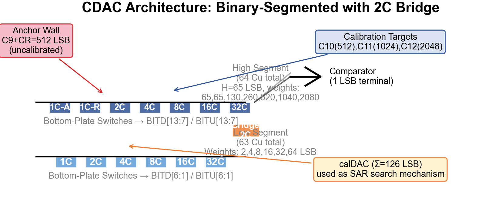
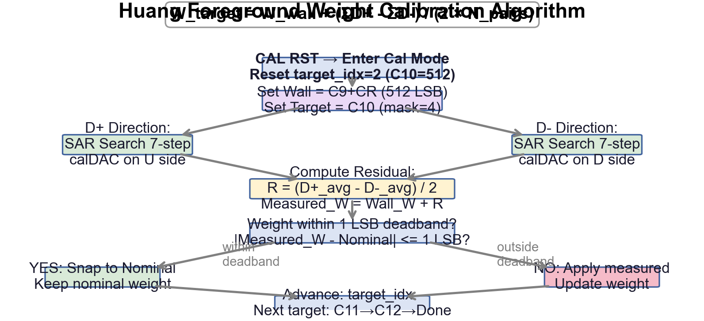
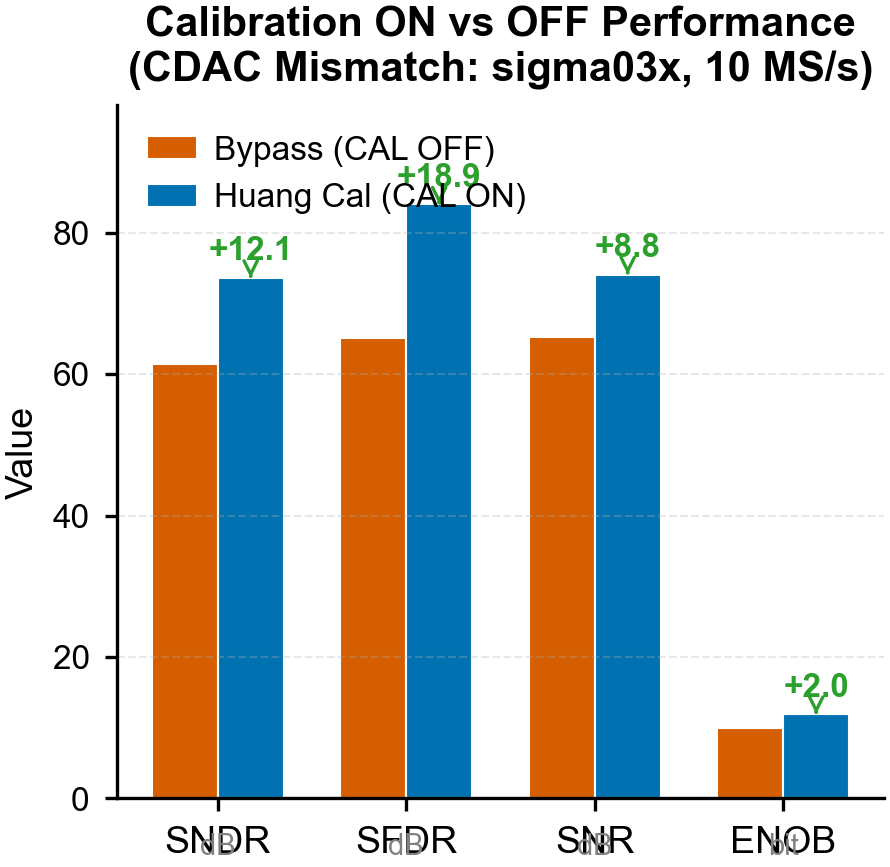
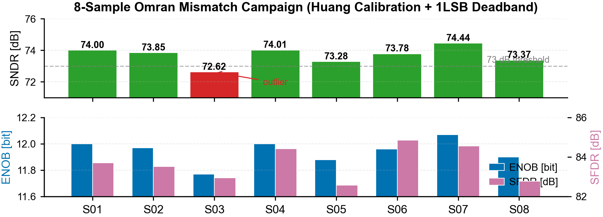
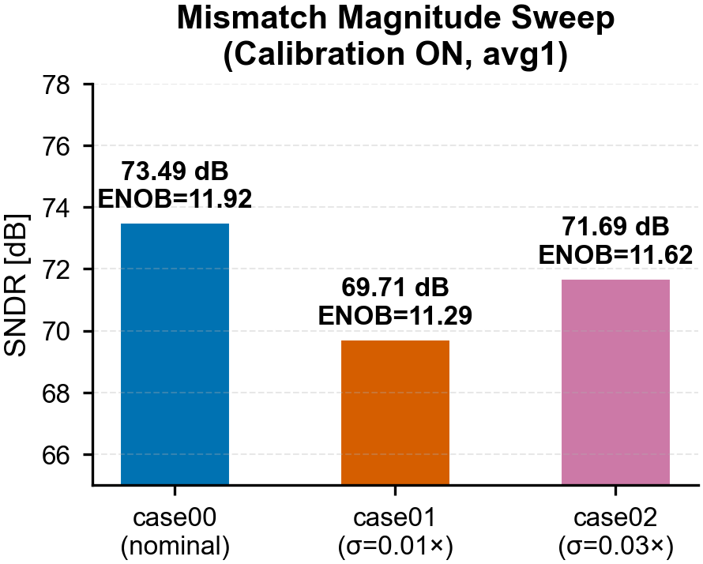
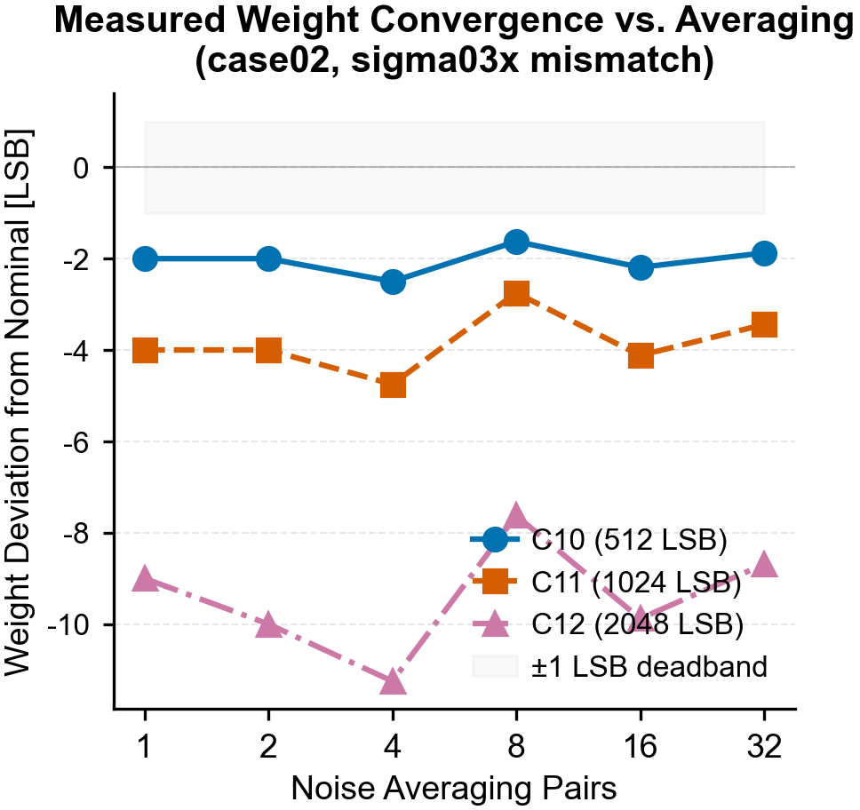

ADC 采用 桥接分段式电荷域 DAC（VCM-based switching），通过 2C 桥接电容将电容阵列分为高段和低段。非二进制冗余权重（WΣ = 4351 LSB）提供 256 LSB 冗余覆盖，支持数字误差校正。

| 段 | 电容 | 标称值 | 有效权重 [LSB] | SAR 阶段 | 校准状态 |
|---|---|---|---|---|---|
| 高段 | C12 | 16C | 2048 | 1 | 校准目标 |
| C11 | 8C | 1024 | 2 | 校准目标 | |
| C10 | 4C | 512 | 3 | 校准目标 | |
| 高段 | C9 | 2C | 256 | 4 | 锚点（基础墙） |
| CR | 2C | 256 | 5 | 锚点（基础墙） | |
| 高段 | C8 | 1C | 128 | 6 | 未校准 |
| — 2C 桥接电容 (α = 1/64) — | |||||
| 低段 | C7 | 24C | 48 | 7 | calDAC MSB |
| C6 | 16C | 32 | 8 | calDAC | |
| C5 | 10C | 20 | 9 | calDAC | |
| C4 | 6C | 12 | 10 | calDAC | |
| C3 | 4C | 8 | 11 | calDAC | |
| C2 | 2C | 4 | 12 | calDAC | |
| C1 | 1C | 2 | 13 | calDAC LSB | |
calDAC：低段 C7-C1（总权重 126 LSB = 48+32+20+12+8+4+2）作为片上 offset-binary SAR 搜索机制。校准期间，calDAC 通过 SWITCH_CAL 切换到 U 侧或 D 侧执行 7-bit 差分 SAR 搜索，将 CDAC 残余电荷量化到 Qmin = 2 LSB 粒度。
采用 Huang 2024 前台权重校准，以 C9+CR（512 LSB）为参考墙，通过 calDAC 执行差分 SAR 搜索，逐一测量高位电容的实际权重。校准采用 POS/NEG 双向搜索 消除比较器失调，并通过 1 LSB Deadband 机制避免低失配下的错误更新。

其中 D+ 为 calDAC 在 U 侧搜索的量化结果，D- 为 calDAC 在 D 侧搜索结果。差分取平均消去比较器失调，Npairs 对应平均次数（噪声抑制）。
校准判决依赖 dither 在比较器阈值附近引入随机偏移以打破量化栅栏。V7 修复将 dither 范围从 [-0.5, +0.5) LSB 扩展至 [-2, +2) LSB（DITHERRANGELSB = 4.0），匹配 calDAC 最小步进 2 LSB，确保 dither 跨越至少一个量化步长。
由于 Omran 论文模型下高位失配极低（σ ≈ 0.18-0.36 LSB rms），无噪声环境下的校准分辨率无法可靠分辨 < 1 LSB 的失配。引入 ±1 LSB Deadband：若实测权重偏离标称值在 1 LSB 以内，直接 snap 回标称值，避免噪声导致的错误更新。
在 CDAC 失配（sigma03x, Omran 模型）条件下，校准开启后所有核心性能指标均有显著提升：

| 配置 | ENOB [bit] | SNDR [dB] | SFDR [dB] | SNR [dB] |
|---|---|---|---|---|
| Bypass (CAL OFF) | 9.92 | 61.48 | 65.07 | 65.30 |
| Huang Cal (CAL ON) | 11.93 | 73.61 | 83.99 | 74.09 |
| 数据来源: full_adc_bypass_800m/analysis/metrics.json & full_adc_frame_cal_800m/analysis/metrics.json | ||||
对 8 个独立失配样本（Omran 论文级 CDAC 失配分布，σ ≈ 0.18-0.36 LSB rms）逐一运行校准 + 动态 FFT 测试：

| 样本 | SNDR [dB] | SFDR [dB] | SNR [dB] | ENOB [bit] | SNDR > 73 dB |
|---|---|---|---|---|---|
| sample01 | 74.00 | 83.71 | 74.59 | 12.00 | ✓ |
| sample02 | 73.85 | 83.52 | 73.96 | 11.97 | ✓ |
| sample03 | 72.62 | 82.95 | 72.85 | 11.77 | ✗ |
| sample04 | 74.01 | 84.42 | 74.20 | 12.00 | ✓ |
| sample05 | 73.28 | 82.57 | 73.62 | 11.88 | ✓ |
| sample06 | 73.78 | 84.85 | 74.12 | 11.96 | ✓ |
| sample07 | 74.44 | 84.56 | 74.70 | 12.07 | ✓ |
| sample08 | 73.37 | 82.77 | 73.64 | 11.90 | ✓ |

| Case | CDAC 失配 σ | SNDR [dB] | ENOB [bit] | 校准状态 |
|---|---|---|---|---|
| case00 | 理想 (0) | 73.49 | 11.92 | CAL ON (avg1) |
| case01 | σ = 0.01× | 69.71 | 11.29 | CAL ON (avg1) |
| case02 | σ = 0.03× | 71.69 | 11.62 | CAL ON (avg1) |

在 sigma03x 失配 + 带宽限制噪声条件下，增加 Npairs 可有效降低单次判决的量化噪声，将权重测量精度提升至 ±0.5 LSB 以内（Npairs ≥ 8）。但收敛趋势显示在 Npairs > 8 后改进有限，建议默认使用 Npairs = 8-16。
| Campaign | 文件数 | DONE | ERR | 时间 [μs] | Calibrated Target Count |
|---|---|---|---|---|---|
| sourcecenter calibration_db0 (旧) | 8 | 100% | 0 | 0.60 | 3 (C10/C11/C12) |
| sourcecenter recursive_db1 (新) | 8 | 100% | 0 | 0.60 | 3 (C10/C11/C12) |
| sourcecenter avg1 (扩展) | 5 | 100% | 0 | 1.20 | 6 (C8/C9/CR/C10/C11/C12) |
| case01 noise_avg series | 2 | 100% | 0 | 19-38 | 6 (noise avg 16/32) |
| case02 noise_avg series | 6 | 100% | 0 | 1.2-38 | 6 (avg 1-32) |
| case00-case05 (sigma sweep) | 5 | 100% | 0 | 1.20 | 6 (avg 1) |
所有 44 个 calibration_summary.json 中 DONE=1, ERR=0，校准过程无故障。
| 问题 | 严重度 | 状态 | 建议 |
|---|---|---|---|
| 墙传播误差 | 中高 | 已知/不可修复 | C9/CR 需在版图中做共质心匹配，将物理失配控制在 < 0.25 LSB |
| Dither V7 未在 Spectre 验证 | 高 | 待执行 | 在 VM 中替换 COM_ideal.va 为 V7，运行 DITHER_RANGE_LSB=4.0 的闭环 Spectre 仿真 |
| 无 DNL/INL 数据 | 高 | 待执行 | 运行 DC ramp 仿真，生成静态线性度测量 |
| 无 PVT 校准数据 | 中 | 待执行 | 在 FF/SS 角 + 温度扫描下验证校准稳定性 |
| 无噪声条件下的校准 | 中 | 待执行 | NF=1 瞬态噪声条件下运行 Npairs=16/32 校准 |
| Sub-LSB 失配检测能力 | 中 | 已知 | 噪声辅助多次平均（Npairs ≥ 32）可提升亚 LSB 分辨率 |